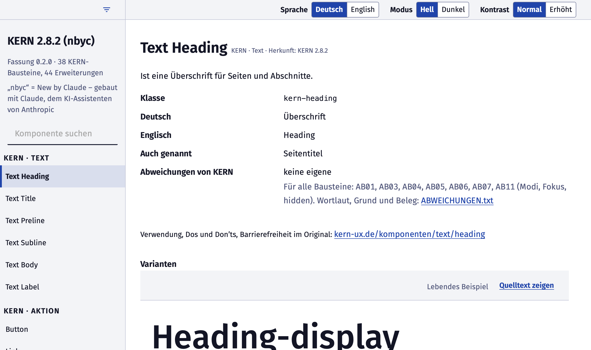
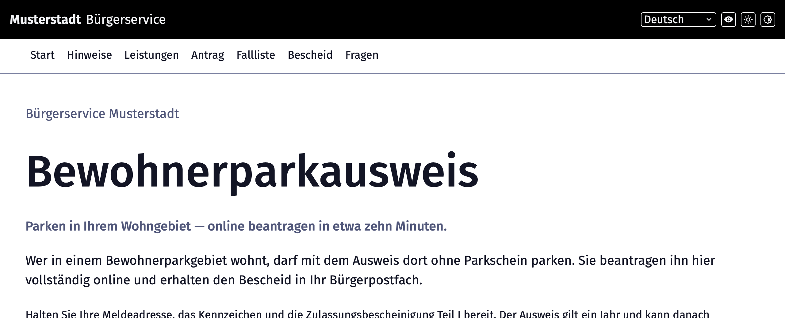
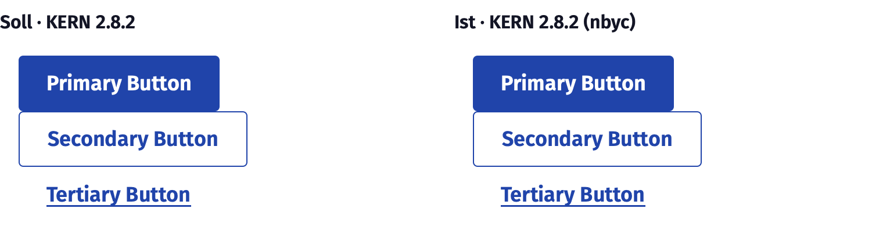
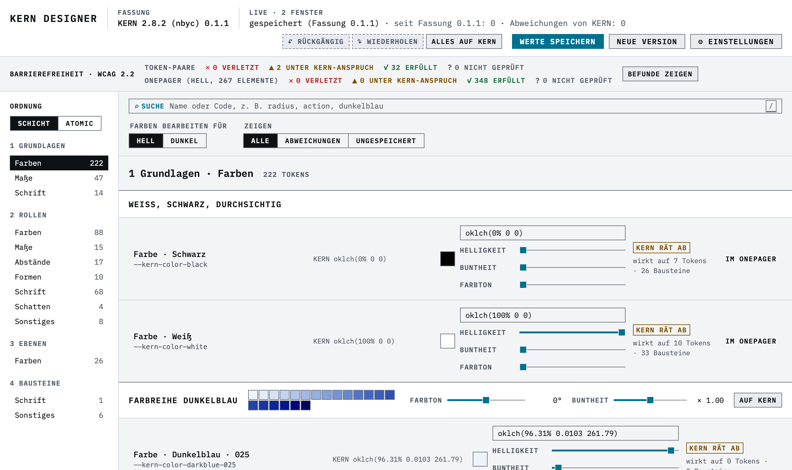
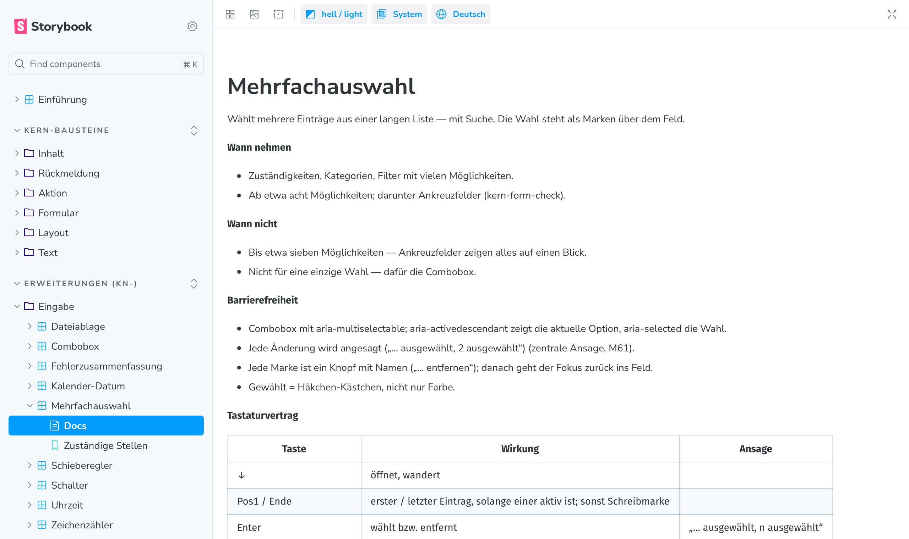

Technologie · Nachnutzung von KERN
Vollständig, geprüft, auf KERN gebaut
KERN liefert reines CSS — stark für die Übernahme in
viele Techniken, offen dort, wo Verhalten gebraucht wird. KERN 2.8.2 (nbyc) bindet
kern.css 2.8.2 Byte für Byte unverändert ein und ergänzt genau die Schicht
darüber: Tastatur und Rückmeldung für jede Bedienung, die fehlenden Bausteine, Modi und
Katalog. Kein npm, kein Bauwerkzeug, keine Netzabfrage.

Katalog · Storybook · Prüfstand
85 Einträge · 196 Stories · 27 Prüfungen
Erhöhter Kontrast · drei Dichte-Stufen
hell · dunkel · Kontrast
44 Erweiterungen aus KERN-Tokens
Reiter, Combobox, Kalender, Datentabelle …
Tastatur und Ansage je Baustein
Taste → Wirkung → Ansage
KERN 2.8.2 — kern.css unverändert
4 152 Tokenwerte · 38 Bausteine · Prüfsumme belegt
Vollständigkeit
38 KERN-Bausteine mit KERNs Original-Beispielen, dazu 44 Erweiterungen: Reiter, Combobox, Brotkrumen, Seitenweiser, Schrittfolge, Schublade, Kalender, Datentabelle, Baum, Fehlerzusammenfassung. Gegenüber Carbon und Material 3 fehlt damit kein Baustein mehr (vorher sechs und zwei). Jeder Baustein bringt alle Varianten und Zustände mit, Ebenen 0 bis 2, hell, dunkel und erhöhten Kontrast — und einen Tastaturvertrag: Taste, Wirkung, Ansage. Alles zweisprachig, Deutsch und Englisch.

Qualität, die man nachrechnen kann
Alle 135 offiziellen KERN-Beispiele werden Element für Element gegen die eigene Umsetzung gemessen — Lage und Größe mit 1 px Toleranz, dazu 17 Stilwerte: 135 von 135 deckungsgleich, Ausgangswert war 0. Dazu 27 Prüfungen im Skript, und jede gilt erst als fertig, wenn ihre Gegenprobe in einer Kopie rot war. Was nicht geprüft ist, steht genauso da: Firefox, Screenreader, Windows-Kontrastmodus.

- 135 / 135 KERN-Beispiele deckungsgleich
- 4 152 Tokenwerte wie bei KERN
- 27 Prüfungen, jede mit Gegenprobe
- 27 Befunde im Original gemeldet
Vergleich mit acht anderen Systemen
Vorangegangen ist ein Vergleich von neun Design-Systemen gegen 95 prüfbare Kriterien. Der Auszug zeigt, wo KERN die Umsetzung bewusst offen lässt — und was diese Adaption daraus gemacht hat.
| Kriterium | Carbon | Material 3 | KERN | (nbyc) |
|---|---|---|---|---|
| Tastatur vollständig | ✓ | ✓ | ~ | ✓ |
| Rückmeldung je Interaktion | ✓ | ✓ | ~ | ✓ |
| Grundbestand Bausteine | ✓ | ✓ | ~ | ✓ |
| Meldungsarten mit Regel | ✓ | ✓ | ~ | ✓ |
| Bewegungstokens | ✓ | ✓ | – | ✓ |
| Synonyme und Suche im Katalog | ~ | ~ | ✓ | ✓ |
| Design-Bibliothek (Figma) | ✓ | ✓ | ✓ | ~ |
| Framework-Anbindung | ✓ | ✓ | ~ | ~ |
Extra: der KERN Designer
Dazu gehört ein Token-Editor mit Live-Vorschau: Jeder Token lässt sich ändern, die Wirkung ist sofort an echten Bausteinen zu sehen, und je Token steht dabei, ob KERN das freigibt oder davon abrät. Der Kontrast wird nach WCAG 2.2 mitgerechnet, bevor etwas gespeichert wird. Das Ergebnis ist ein eigenes Thema mit eigener Fassung in einer eigenen Datei — das System darunter bleibt unverändert KERN, und „auf KERN zurück" ist ein Schritt. Daneben liegt eine Seite mit allen Bausteinen, Varianten und Zuständen auf einmal, zum Vergleichen und Messen.

Und für die Entwicklung: Storybook
Alle Bausteine liegen auch als Storybook bereit, im Format von KERNs eigenem. Die Stories werden aus dem Katalog erzeugt, nie von Hand geschrieben: 85 Einträge mit 195 Beispielen werden zu 196 Stories und 85 Doku-Seiten — mit Tastaturvertrag, Klassen und Pflichten aus KERN, in beiden Sprachen.

Kein offizielles KERN
„2.8.2" ist die Version des eingebundenen KERN und wird nie hochgezählt; „(nbyc)" heißt „New by Claude" — gebaut mit Claude, dem KI-Assistenten von Anthropic, mit Entscheidungen und Prüfungen bei Menschen. Eine Adaption, kein Angebot des KERN-Projekts oder eines Landes. Offen: die Absprache über den Namen mit dem KERN-Team und die rechtliche Prüfung der Lizenzlage.
- Lizenz
- EUPL-1.2 wie KERN; Fira Sans unter OFL-1.1, Symbole über KERN unter Apache-2.0 — alle Texte liegen bei.
- Reifegrad
- Beta · Fassung 0.2.0 (16.11.2026), KERN-Bezug 2.8.2
- Barrierefreiheit
- Ziel WCAG 2.2 AA (BITV 2.0), teilweise geprüft: Kontrast je Modus gemessen, Tastatur protokolliert; Screenreader und Windows-Kontrastmodus noch nicht.
- Technik
- CSS und ES5-JavaScript, Python für die Prüfskripte; npm nur im Storybook.